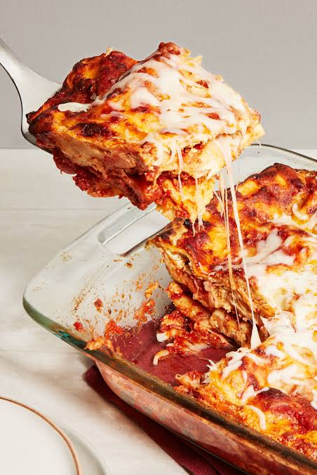

Lasagna

Description
Wide pasta noodles with a rich beef and tomato sauce, creamy ricotta cheese, and melted mozzarella.
Ingredients
Meat and Sauce
- 1 pound lean ground beef
- ½ pound sweet Italian sausage
- ½ cup minced onion
- 2 cloves garlic, minced
- 1 (28-ounce) can crushed tomatoes
- 1 (6-ounce) can tomato paste
- 1 (8-ounce) can tomato sauce
- 2 teaspoons dried basil
- ½ teaspoon dried oregano
- 1 teaspoon salt
- ¼ teaspoon black pepper
Noodle and Cheese
- 12 lasagna noodles
- 16 ounces ricotta cheese
- 1 large egg (for the cheese bind)
- 4 cups shredded mozzarella cheese
- ¾ cup grated Parmesan cheese
Instructions
- Cook the Meat Sauce: Heat a large skillet over medium-high heat. Add the ground beef and sausage. Cook until brown. Add the onion and garlic. Cook for 5 minutes until soft. Stir in the crushed tomatoes, tomato paste, tomato sauce, basil, oregano, salt, and pepper. Simmer on low heat for 30 minutes.
- Boil the Noodles: Boil a large pot of salted water. Add the lasagna noodles. Cook for 8 to 10 minutes until tender. Drain with cold water.
- Mix the Cheese: In a bowl, stir together the ricotta cheese, egg, and half of the Parmesan cheese.
- Layer the Lasagna: Preheat your oven to 375°F (190°C). Spread a thin layer of meat sauce in a 9x13-inch baking dish. Add a layer of 4 noodles. Spread a third of the ricotta mixture over the noodles. Top with a layer of meat sauce and a handful of mozzarella. Repeat these layers two more times. Finish with a final layer of noodles, remaining sauce, and a heavy topping of mozzarella and Parmesan.
- Bake: Cover the dish with foil. Bake for 30 minutes. Remove the foil. Bake for 10 more minutes until the cheese is golden and bubbling. Cool for 10 minutes before slicing.
Home